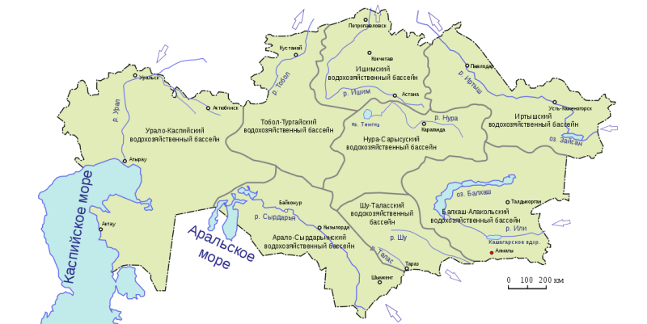
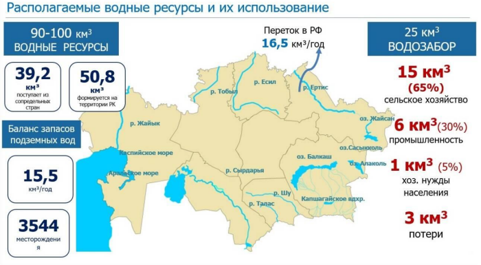

Oljas Ibraev
Согласно данным Всемирной Метеорологической Организации, Казахстан будет ощущать большие изменения климата в течении 21 века. Засуха, лесные пожары, обмеление рек станут обычным явлением в нашей стране. За этими определениями природных катастроф скрывается большие проблемы для нашего народа. Какими могут быть последствия от этих катастроф? По прогнозам площади пастбищ сократится на 10% к 2030 году, дефицит воды достигнет 50% от потребности к 2040 году. А также более 50% ледниковых масс будут потеряны к 2100 году. При этом в нашей стране основным источником воды для орошения сельского хозяйства является реки. То есть засуха, а за ним и обмеление рек напрямую оказывает влияние на продовольственную безопасность страны. Также реки являются источников питьевой воды для населения. А теперь вы можете представить, вообразить катастрофические последствия от засухи и обмеления рек?
Более того, нам стоит обратить внимание на географическое положение страны. В Казахстане 7 крупных рек протяженность которых более 1000 км, такие как Сырдарья, Иртыш, Урал, Или, Шу, Ишим и Тобол. Вдоль этих рек расположены крупнейшие города с промышленными центрами. Здесь надо отметить, тот факт, что помимо сельского хозяйства и людей воду также потребляет промышленность. Но не отступая вернемся к описанию географического положения речных водных ресурсов страны, так как это очень важно. А важность заключается в том, что исток воды в 6 из 7 крупных рек страны находятся за пределами Казахстана. По данным МЭГПР РК около 50% водных ресурсов Каазахстна формируется из сопредельных государств. Что это означает? Какие есть угрозы? Кратко можно сказать наши реки, нам не принадлежат. Наши соседи, контролируя истоки рек имеют возможность влиять на уровень воды путем сдерживания воды. Они строят гидроэлектростанции, водохранилища, орошают свои сельхозяйственные земли. Изменения климата, засуха и обмеление рек имеет влияние также на наших соседей, то есть для своей безопасности они будут предпринимать меры, запасаться водой с истоков этих 7 крупных рек. Например, по сообщению министерства экологии и природных ресурсов экологии Казахстана, Кировское водохранилище в соседнем Кыргызстане сократилось в 6 раз в 2023 году по сравнению с прошлым годом. Соответственно из Кыргызстана вода не поступает на наши южные регионы. Это ситуация критически повлияло на районы Жамбылской области, во многие аулы вода практически не поступает. Возникает справедливый вопрос какие меры готов предпринять Казахстан, какие программы имеет правительство, работает ли вообще наше правительство в этом направлении. Очень важно иметь четкие прогнозы последствий засухи, обмеления рек на жизнь нашей страны. Очевидно одно, климатические изменения будут иметь большие влияния на социально-экономическое развитие страны. Вода источник жизни, вода источник продовольствия и один из ресурсов промышленности.
Сокращение водных ресурсов напрямую повлияет на продовольственные цены, на уровень промышленного развития, внутренней и внешней миграции, оттоку населения, здоровью населения, безработице. Ближайшее 20 лет нашей стране, нашему правительству предстоит большой вызов.
If you have suggestions, we welcome your input and encourage you to reach out to us.